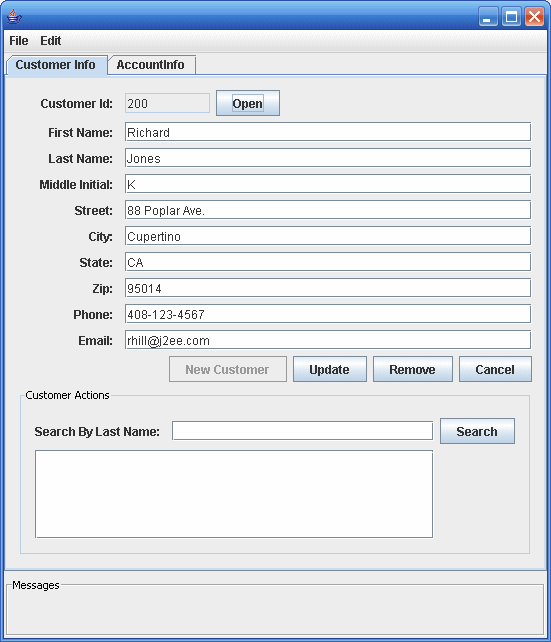

Application Client
Sometimes, enterprise applications use a stand-alone client application for handling tasks such as system or application administration. For example, the Duke’s Bank application uses an application client to administer customers and accounts. This capability is useful in the event that the site becomes inaccessible for any reason or if a customer prefers to communicate things such as changes to account information by phone.
The application client shown in Figure 37-3 handles basic customer and account administration for the banking application through a Swing user interface. The bank administrator can perform any of the following functions on the respective tabs.
Figure 37-3 Application Client
Customer Info tab:
View customer information
Add a new customer to the database
Update customer information
Remove a customer
Find a customer’s ID
Account administration:
Create a new account
Add a new customer to an existing account
Remove a customer from an existing account
View account information
Remove an account from the database
Error and informational messages appear in the bottom under Messages.
The Classes and Their Relationships
The source code for the application client is in the following directory:
tut-install/javaeetutorial5/examples/dukesbank/dukesbank-appclient/src/java/com/sun/tutorial/ javaee/dukesbank/client/
The application client is consists of a single class: BankAdmin.
BankAdmin Class
The BankAdmin class, which creates the user interface, is a Swing class that provides action methods that are called when certain events occur in the application, and methods that call the controller session beans. It was created using the NetBeans IDE Swing editor, Matisse.
Note - Although BankAdmin was written using NetBeans IDE, you do not need to have NetBeans installed in order to run the application. If you want to alter the user interface, however, you do need to use NetBeans IDE.
The BankAdmin Constructor
The BankAdmin constructor creates the initial user interface, which consists of a menu bar, two tabs, and a message pane, by calling the initComponents method. The menu bar contains the standard File and Edit menus, the left tab is for viewing and updating customer information, the right tab is for viewing and updating account information, and the message pane contains a message area.
The initComponents method is automatically generated by NetBeans IDE. It creates all the user interface elements visible in BankAdmin.
Class Methods
The BankAdmin class provides methods that other objects call when they need to update the user interface. These methods are as follows:
setCustomerTextFields: When true enables the user to enter or change information in the customer tab. When false, the fields are disabled.
fillCustomerTextFields: Uses a CustomerDetails object to display customer information in the customer tab
clearCustomerTextFields: Clears the contents of the customer fields in the customer tab
setAccountTextFields: When true enables the user to enter or change information in the account tab. When false, the fields are disabled.
fillAccountTextFields: Uses an AccountDetails object to display account information in the account tab
clearAccountTextFields: Clears the contents of the account fields in the account tab
resetAll: Calls setCustomerTextFields and setAccountFields, setting all the fields to disabled
The following methods interact with the controller session beans to create and update customer and account information:
createAccount: uses an AccountDetails object to create a new account
updateAccount: uses an AccountDetails object to update an account information
createCustomer: uses a CustomerDetails object to create a new customer
updateCustomer: uses a CustomerDetails object to update a customer’s information
The UI-elementMouseReleased methods are linked to the GUI controls in BankAdmin. They call the previous methods to enable/disable the GUI fields, and create/update accounts and customers.